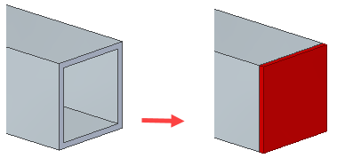
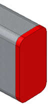
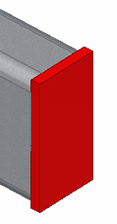
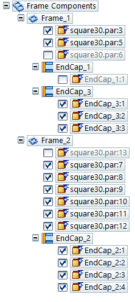
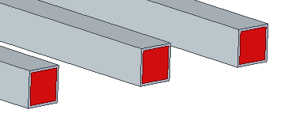
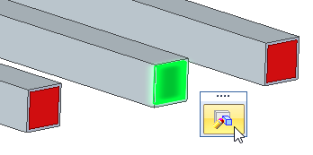
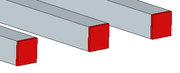
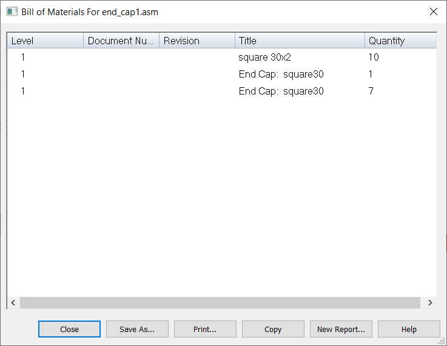
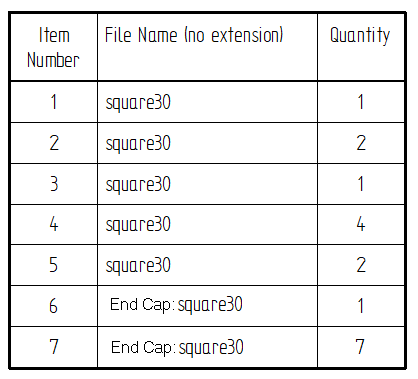

Frame End Cap command
Use the Home tab→Frame group→Frame End Cap command to place caps on the ends of the frame structure.

End caps are allowed on singular planar faces. Specially trimmed frame ends are not supported.
You can create the end cap based on:
|
Frame cross section |
 |
|
Profile bounding box |
 |
You can use the End Cap Options dialog box do the following:
|
Extend the end cap inward |
|
|
Extend the cap outward. |
|
|
Inset the end cap inward. |
|
|
Offset the end cap from the inner loop of the frame. |
|
|
Increases the end cap beyond the face of the frame. |
|
|
Apply a chamfer corner treatment. |
|
|
Apply a fillet corner treatment. |
|


End caps in PathFinder
After you create frame end caps, unique end caps are listed under each frame member in PathFinder.

You can use the Inspect tab→ Physical Properties group→Properties Manager command to display property values for the frames and their end caps.
Editing frame end caps
You can use the Edit Definition command to edit similar end caps under a frame.
In the following example, an inward end cap was created.

To edit the similar end caps, right-click the end cap, and then click the Edit Definition button to display the Frame End Caps Options dialog box.

On the Frame End Caps Options dialog box, the inward end cap is changed to an outward end cap. The similar end caps are updated after you click the OK or Apply button.

End caps in reports
You can create a bill of materials (BOM) that lists the endpoints and their quantities.

Drawings created from the frame assembly will display and list the end caps in the parts list.

How do I
Add a custom frame componentCreate a structural frame
Save a structural frame component
Edit frame end conditions
Edit a frame cross section
Create a frame end cap
Edit a frame end cap
Trim or extend a frame
Create frames with weld gaps
Learn more
Structural frame design workflowSaving frame components
Saving structural frame components
Look up more details
Frame commandFrame command bar
Frame Options dialog box
Creating a structural frame
Adding members to a frame
Edit End Conditions command
Edit Cross Sections command
Frame snap points
End Cap Options dialog box
Frame Origin command
Trim/Extend command
Trim/Extend command bar
Adding custom frame components to a local library
Creating a custom structural frame component: best practices
Defining hole locations in a frame